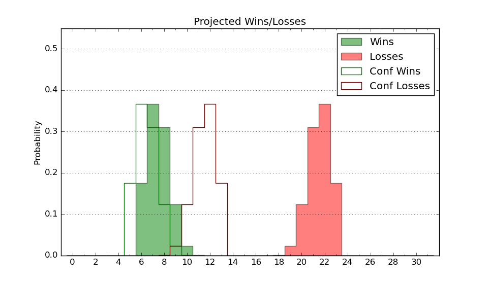

| Home | Game Probabilities | Conferences | Preseason Predictions | Odds Charts | NCAA Tournament |
| City: | Elon, North Carolina | |
| Conference: | Colonial (7th)
| |
| Record: | 5-8 (Conf) 6-18 (Overall) | |
| Ratings: | Comp.: -9.5 (269th) Net: -9.6 (274th) Off: 98.7 (241st) Def: 108.3 (285th) SoR: 0.0 (172nd) |
| Remaining | ||||||
|---|---|---|---|---|---|---|
| Date | Opponent | Win Prob | Pred. | |||
| 2/15 | Hofstra (109) | 26.9% | L 69-76 | |||
| 2/17 | Delaware (140) | 36.5% | L 68-72 | |||
| 2/19 | Drexel (154) | 40.2% | L 67-70 | |||
| 2/24 | @ Hofstra (109) | 9.8% | L 65-80 | |||
| 2/26 | @ Northeastern (263) | 33.1% | L 63-68 | |||
| Previous | Game Score | |||||
| Date | Opponent | Win Prob | Result | Off | Def | Net |
| 11/9 | @Florida (43) | 4.2% | L 61-74 | 5.3 | 8.7 | 14.0 |
| 11/18 | (N) West Virginia (67) | 10.2% | L 68-87 | 1.8 | -7.8 | -6.0 |
| 11/19 | (N) Mississippi (106) | 16.0% | L 56-74 | -18.0 | 4.6 | -13.4 |
| 11/21 | (N) Temple (121) | 19.5% | L 58-75 | -7.7 | -3.8 | -11.5 |
| 11/27 | Jacksonville St. (151) | 39.1% | L 81-93 | 13.6 | -28.4 | -14.9 |
| 11/30 | @UNC Greensboro (155) | 16.7% | L 61-74 | -6.0 | -3.5 | -9.4 |
| 12/4 | High Point (224) | 53.3% | L 77-83 | 15.7 | -26.5 | -10.7 |
| 12/11 | @North Carolina (38) | 4.0% | L 63-80 | -8.7 | 17.7 | 9.1 |
| 12/15 | Winthrop (180) | 45.1% | W 63-61 | -3.8 | 8.4 | 4.6 |
| 12/18 | @Duke (9) | 1.4% | L 56-87 | -4.7 | 2.6 | -2.1 |
| 12/21 | @Arkansas (32) | 3.6% | L 55-81 | -1.8 | -3.6 | -5.5 |
| 12/29 | Northeastern (263) | 62.7% | W 79-62 | 24.7 | -0.9 | 23.8 |
| 1/9 | @College of Charleston (162) | 17.6% | L 61-65 | -7.3 | 15.3 | 8.0 |
| 1/12 | @UNC Wilmington (209) | 22.3% | L 66-73 | 11.8 | -7.2 | 4.6 |
| 1/15 | Towson (82) | 20.6% | L 54-59 | -13.2 | 17.8 | 4.6 |
| 1/17 | James Madison (227) | 53.6% | W 90-67 | 24.3 | 2.6 | 26.9 |
| 1/20 | @Drexel (154) | 16.5% | L 49-77 | -19.4 | -7.6 | -27.1 |
| 1/22 | @Delaware (140) | 14.4% | L 77-80 | 17.6 | -2.6 | 15.0 |
| 1/27 | William & Mary (330) | 80.6% | W 61-54 | -15.5 | 11.4 | -4.1 |
| 1/29 | @William & Mary (330) | 55.0% | L 61-65 | -4.9 | -1.1 | -6.0 |
| 2/3 | UNC Wilmington (209) | 49.5% | W 78-65 | 20.8 | 3.2 | 24.1 |
| 2/5 | College of Charleston (162) | 42.1% | L 64-66 | -9.9 | 9.9 | 0.0 |
| 2/10 | @James Madison (227) | 25.3% | W 70-66 | 13.8 | 4.4 | 18.2 |
| 2/12 | @Towson (82) | 7.1% | L 50-86 | -14.9 | -17.9 | -32.8 |
| Stats & Trends | |||||
|---|---|---|---|---|---|
| Current | Day | Week | Month | Season | |
| Composite | -9.5 | -0.1 | -1.0 | +0.3 | -9.3 |
| Comp Rank | 269 | -1 | -5 | +12 | -62 |
| Net Efficiency | -9.6 | -0.1 | -0.9 | +1.9 | -- |
| Net Rank | 274 | -6 | -8 | +11 | -- |
| Off Efficiency | 98.7 | -0.1 | -0.4 | -0.1 | -- |
| Off Rank | 241 | -1 | -8 | -7 | -- |
| Def Efficiency | 108.3 | +0.0 | -0.5 | +2.1 | -- |
| Def Rank | 285 | +3 | -3 | +34 | -- |
| SoS Rank | 100 | -4 | +4 | -79 | -- |
| Exp. Wins | 7.5 | -0.0 | +0.6 | +1.6 | -4.3 |
| Exp. Conf Wins | 6.5 | -0.0 | +0.6 | +1.6 | -2.4 |
| Conf Champ Prob | 0.0 | -- | -- | -0.0 | -5.4 |

| Advanced Stats | ||
|---|---|---|
| Stat | Value | Rank |
| Off Eff FG % | 0.496 | 187 |
| Off Ast Ratio | 0.140 | 168 |
| Off ORB% | 0.243 | 289 |
| Off TO Rate | 0.177 | 264 |
| Off FT Ratio | 0.256 | 306 |
| Def Eff FG % | 0.510 | 206 |
| Def Ast Ratio | 0.139 | 168 |
| Def ORB% | 0.282 | 185 |
| Def TO Rate | 0.158 | 216 |
| Def FT Ratio | 0.435 | 347 |